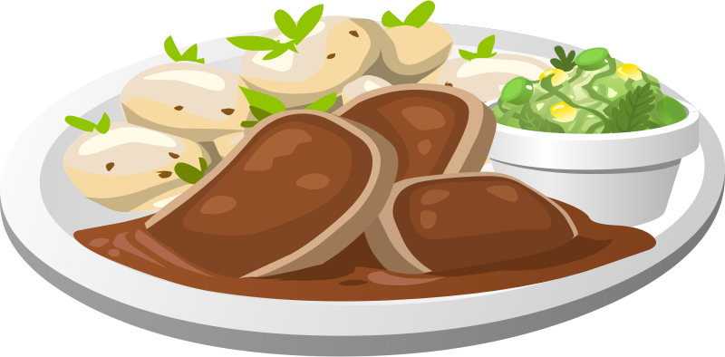

Have you ever burnt your food?
Did you ever try eating food that is still raw on the inside?
Sometimes people can be forgetful or too hasty when cooking. AptPan is designed to help you track your cooking process so you will never have these problems again. You can also adjust how cooked your food is. AptPan tells you how cooked the food is and notifies you when it is done.
